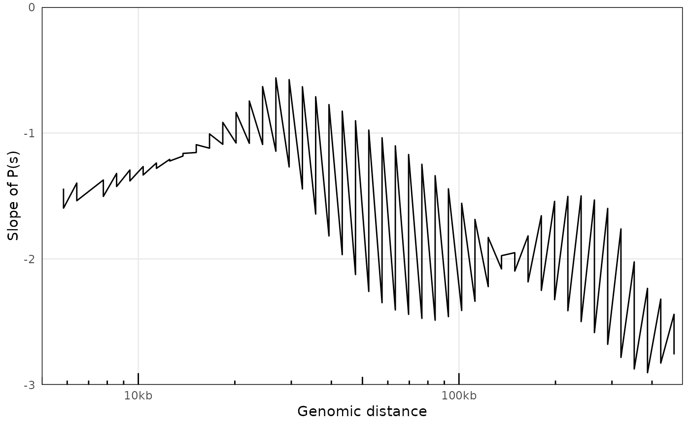

getPs
plotPs
plotPsSlope
A contacts object
by_chr
filtered_chr
...
xlim
ylim
a tibble
ggplot
ggplot
library(HiContacts)
data(contacts_yeast)
getPs(contacts_yeast)
#> pairsFile not specified. The P(s) curve will be an approximation.
#> # A tibble: 57 × 5
#> binned_distance p norm_p norm_p_unity slope
#> <dbl> <dbl> <dbl> <dbl> <dbl>
#> 1 1 0.121 0.121 242583. 0
#> 2 956 0.0735 0.000774 1557. -1.68
#> 3 1862 0.0700 0.000376 757. -1.63
#> 4 2999 0.0576 0.000192 386. -1.59
#> 5 3992 0.0462 0.000116 233. -1.53
#> 6 4830 0.0386 0.0000800 161. -1.48
#> 7 5844 0.0336 0.0000575 116. -1.44
#> 8 6429 0.0292 0.0000453 91.2 -1.40
#> 9 7779 0.0263 0.0000339 68.1 -1.37
#> 10 8557 0.0240 0.0000281 56.5 -1.32
#> # … with 47 more rows
## Single P(s)
library(HiContacts)
data(contacts_yeast)
ps <- getPs(contacts_yeast)
#> pairsFile not specified. The P(s) curve will be an approximation.
plotPs(ps, ggplot2::aes(x = binned_distance, y = norm_p))
#> Warning: Removed 11 row(s) containing missing values (geom_path).
## Comparing several P(s)
library(HiContacts)
data(contacts_yeast)
data(contacts_yeast_eco1)
ps_wt <- getPs(contacts_yeast)
#> pairsFile not specified. The P(s) curve will be an approximation.
ps_wt$sample <- 'WT'
ps_eco1 <- getPs(contacts_yeast_eco1)
#> pairsFile not specified. The P(s) curve will be an approximation.
ps_eco1$sample <- 'eco1'
ps <- rbind(ps_wt, ps_eco1)
plotPs(ps, ggplot2::aes(x = binned_distance, y = norm_p, group = sample, color = sample))
#> Warning: Removed 22 row(s) containing missing values (geom_path).
library(HiContacts)
data(contacts_yeast)
ps <- getPs(contacts_yeast)
#> pairsFile not specified. The P(s) curve will be an approximation.
plotPsSlope(ps, ggplot2::aes(x = binned_distance, y = slope))
#> Warning: Removed 11 row(s) containing missing values (geom_path).
